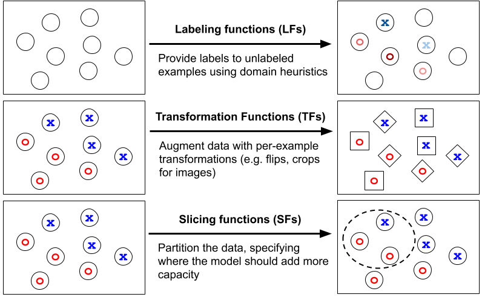
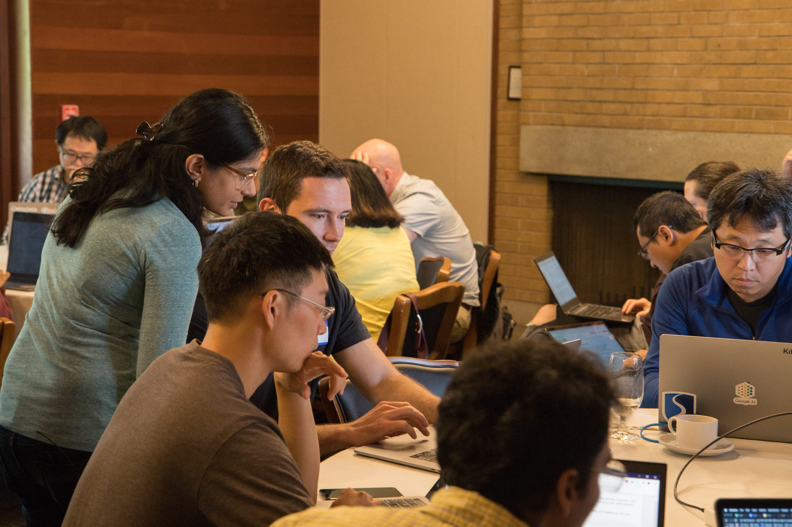

On June 24th and 25th, we hosted a workshop at Stanford to talk about
recent research around Snorkel, discuss applications and extensions, and most
importantly from our end, get feedback on the upcoming v0.9 release of Snorkel.
This upcoming release is our most significant upgrade yet,
integrating research work from the last two years
(VLDBJ 2019,
ICML 2019,
SIGMOD 2019,
AAAI 2019,
DEEM 2018,
NeurIPS 2017),
new operators for building and managing training data, scripts demonstrating how to
reproduce our recent state-of-the-art results on the public benchmark
SuperGLUE,
and a full redesign of the core library!
We were lucky enough to have 55 of our collaborators and users attend this workshop,
including members of industry (Google, Microsoft, Facebook, and others), government,
and medicine.
In this blog post, we’ll describe some of the upcoming changes in v0.9 we’re most
excited about, summarize and share the workshop contents, and most importantly invite
your feedback as we prepare for the v0.9 release this August!
Snorkel v0.9 Teaser
Snorkel v0.9 integrates our recent research advances and Snorkel-based open source projects into
one modern Python library for building and managing training datasets.
In this release, we are:
Adding two new core data set operators — transformation functions and
slicing functions — alongside labeling functions
Upgrading the labeling pipeline using the latest frameworks and algorithmic research
Redesigning the codebase to be a more general purpose and modular engine
We previewed these changes at the workshop, and are now sharing the
workshop contents
below to get your feedback as well leading up to the release in August!
New core data set operations: transforming and slicing
We started building Snorkel in 2016, motivated by the increasing commoditization of ML models
and infrastructure, and the increasing primacy of training data.
We set out to create a framework where building and managing training data in programmatic,
heuristic, or otherwise noisy ways was the primary mode of interaction with machine learning.
To begin, we focused on one aspect of this broader set of activities: labeling training data,
by writing heuristic labeling functions
(NeurIPS 2016,
blog).
Our upcoming release adds two new core operations as first class citizens in addition to
programmatic labeling.
The first is transforming data points with transformation functions (TFs), our
general
framework for data augmentation.
The second is
slicing training data
with slicing functions (SFs), in order to monitor and focus model attention on subsets of the
training dataset where classification is more critical or difficult.

We’re excited to bring these concepts to the forefront of programmatic data set creation.
Snorkel provides users with a flexible interface for applying state-of-the-art automated data
augmentation techniques like
TANDA (NeurIPS 2017)
to their problems.
Using this interface, attendees were able to reproduce state-of-the-art data augmentation
techniques for text applications — as well as create original ones — in a single work session.
Slicing is a more recent research advance, but has already powered state-of-the-art results like
our SuperGLUE system.
Workshop participants were interested in more academic literature on slicing, which we’ll be
releasing in the coming months.
In the meantime, check out our
blog post on slicing in SuperGLUE
and the slicing
workshop materials below.
Upgraded labeling pipeline
The programmatic labeling engine is getting updated to the latest and greatest.
The new core generative label model uses the matrix-completion approach studied in our
AAAI 2019 and
ICML 2019
papers and implemented in
Snorkel MeTaL.
The label model is currently implemented in PyTorch, but we’re starting work on a
TensorFlow-based and TFX servable version that many workshop participants requested.
We're also providing native support for applying labeling functions using Spark and Dask,
making it easier to work with massive data sets.
Spark integration in particular has been a common feature request, and this was echoed
by the workshop attendees.
General purpose engine for building and managing training data
We redesigned Snorkel in version 0.9 to be a general purpose engine
for programmatically building and managing training data sets across different domains
and ML problem types.
Whereas the current version of Snorkel is an end-to-end application for constructing
information extraction models, version 0.9 is a library of modules that can be used
in a wide range of applications.
We’re keeping the core programmatic labeling functionality from the current version,
but removing the extraction-specific tooling and database from the central library.
Workshop attendees were excited about this change, as they could see how to apply Snorkel to their
ML use cases — whether they used text, image, or tabular data — in a straightforward way
and integrate with their existing data infrastructure.
Many of our workshop participants also expressed their interest in continued support of the
current information extraction application version of Snorkel.
We’ll absolutely be doing this, hosted in a new GitHub repo called
snorkel-extraction
which imports the central library in order to get access to the upgraded label model.
Our information extraction system is just one example of a Snorkel-powered
end-to-end application.
We'll be releasing a host of other tutorials and examples in the next couple months.
They’ll have a new home in a dedicated tutorials repo, where you'll be able to see Snorkel
applied to a wide variety of ML problems.
A modern Python library
Workshop participants were excited to learn that Snorkel will have modern installation support
with pip and conda, as well as lots and lots of unit and integration testing.
We also completed full API documentation — requested by just about every participant —
during a sprint following the workshop.
All of this will make it easier to get started with, receive support, and contribute to Snorkel.
Stay tuned for the full Snorkel v0.9 release post, where we’ll share more details and resources!
Overview of Workshop Sessions

The workshop was structured around the three core Snorkel operations: labeling,
transforming, and slicing.
Labeling functions were covered on the first day, and transformation and slicing
functions covered on the second day.
We also explored code from our state-of-the-art SuperGLUE submission,
demonstrating transformation and slicing on several of the tasks.
The first half of each day was divided between presentations (both high-level and
technical or theoretical deep dives for those interested) and Jupyter notebook-based
tutorials.
We had two hours of open "office hours"-style sessions in the afternoon during which
participants could discuss potential use cases of Snorkel with us and each other,
as well as explore the tutorial notebooks and ask questions.
You can find workshop materials below!
Many of the tutorials as posted here were under active development.
The workshop attendees asked for updated versions with the initial Snorkel v0.9
release along with full GLUE and SuperGLUE code, which we’ll be providing in the new tutorials repo.
Looking Ahead
We’ve been working hard on Snorkel v0.9, and we hope this blog post has convinced you to try it out
when it's released this August.
And we want to give our workshop participants a massive thank you for their enthusiasm and feedback.
If you’re interested in attending the next workshop following the release or staying up-to-date on
the latest developments, we encourage you to
join our mailing list(infrequent posts, we promise).
We’re excited to share Snorkel v0.9 with you and even more excited to hear your feedback,
so stay tuned for our full release announcement!